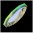
Mirror
A mirror is used to reflect light by 90 degrees. So if light is heading up then you can use a mirror to make it head either left or right.
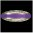
Double Mirror
The is the same as a mirror except it is reflective from two sides. It can be used to turn two seperate beams from either side. Many puzzles make use of this fact by forcing the player to use this mirror on both sides to solve the puzzle.
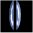
Slit Double Mirror
Exactly the same as a double mirror except it has a hole through it's middle so a beam can pass through it going across.
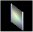
Refractor
A refractor is a used to refract light by 45 degrees. So if light is heading up then you can use a refractor to bend the light and make it go up at an angle to the right or left.
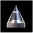
Splitter
A splitter splits a beam into two distinct new beams. A white light hitting the pointy end of a splitter goin up, becames two white beams heading off to the right and left.
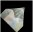
Angled Splitter / Merger
This piece is similar to a splitter except that the split makes two new beams firing off at 45 degree angles. Unlike the splitter this piece allows you to merge beams together.
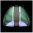
One Way
This piece only allows a beam to go through it in one direction.
Prism
This is probably the most complex piece in Aargon. It is used to split light into it's component colors. It can also mergle light together. The angles used to merge light are very specific and must be the exact opposite angles used when splitting the light out. The Prism can double as a mirror for blue light, a refractor for green light, but has no bending properties for red light.
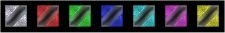
Polarizer
Light can only pass through these in the direction of the slit.
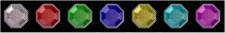
Filter
These are used to fliter out all but certain colors. A yellow filter filters out blue allowing red and green (or yellow) to pass through it.
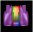
Color Converter
This piece can be used to change the color of a beam of light. For instance, you could use it to change a blue light to a red light or a green light.
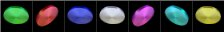
Coin
You must make all of these spin in order to solve the puzzle.
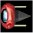
Laser
This is the piece which fires out the beam of light.
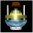
Rotating Laser
Same as a laser except the player can rotate it.